Section 3.5 Definition and basic properties of logarithmic, exponential, trigonometric and hyperbolic functions and their graphs
After completing this section, the student should be able to:
-
define exponential, logarithmic, trigonometric and hyperbolic functions
-
understand the relationship of the exponential and logarithmic functions
-
define the hyperbolic functions and be familiar with their properties
-
sketch the graph of exponential, logarithmic, trigonometric and hyperbolic functions
-
use basic properties of logarithmic, exponential, hyperbolic and trigonometric functions to solve problems
-
\(\displaystyle \textbf{Exponents and radicals}\)
Definition 3.5.1.
For a natural number
\(n\) and a real number
\(x\text{,}\) the power
\(x^{n}\text{,}\) read “ the
\(n^{\text{th}}\) power of
\(x\)” or “
\(x\) raised to
\(n\)”, is defined as follows:
\begin{equation*}
x^{n} = \underset{n\ \text{factors}\ \text{each}\ \text{equal}\ \text{to}\ x}{\overset{x \cdot x \cdot \cdots \cdot x}{\underbrace{}}}
\end{equation*}
In the symbol
\(x^{n}\text{,}\) \(x\) is called the base and
\(n\) is called the exponent.
For example,
\(2^{5} = 2 \times 2 \times 2 \times 2 \times 2 = \text{32}\text{.}\)
Based of the definition of
\(x^{n}\text{,}\) \(n\) must be a natural number. It does not make sense for
\(n\) to be negative or zero. However, we can extend the definition of exponents to include 0 and negative exponents.
Definition 3.5.2.
\(\textbf{Zero and Negative Exponents}\)
\(\begin{align}
\textit{Definition of zero Exponent}\\
x^{0}= 1\ (x \neq 0)\\
\text{Note:}\,0^{0}\text{ is undefined}.
\end{align}\)
\(\begin{align}
\textit{Definition of Negative Exponent}\\
x^{- n} = \frac{1}{x^{n}}\ \left( x \neq 0 \right)\\
\end{align}\)
As a result of the above definition, we have
\(\frac{1}{x^{- n}} = x^{n}\text{.}\) We have the following rules of exponents for integer exponents:
-
\(x^{n} \cdot x^{m} = x^{n + m}\) \(\qquad \quad \text{4.}(\text{xy})^{n} = x^{n}y^{n}\)
-
\((x^{n})^{m} = x^{\text{nm}}\) \(\qquad \qquad \, \text{5.}\frac{x^{n}}{x^{m}} = x^{n - m}\)
-
\(\displaystyle \left ( \frac{x}{y} \right )^n=\frac{x^n}{y^n} \, (y \neq 0)\)
|
Next we extend the definition of exponents even further to include rational number exponents. To do this, we assume that we want the rules for integer exponents also to apply to rational exponents and then use the rules to show us to define a rational exponent. For example, how do we define
\(a^{\frac{1}{2}}\text{?}\) Consider
\(9^{\frac{1}{2}}\text{.}\)
If we apply rule 2 and square
\(9^{\frac{1}{2}}\text{,}\) we get
\(\left( 9^{\frac{1}{2}} \right)^{2} = 9^{\frac{1}{2}} = 9\text{.}\) Thus,
\(9^{\frac{1}{2}}\) is a number that, when squared, yields 9. There are two possible answers: 3 and – 3, since squaring either number will yield 9. To avoid ambiguity, we define
\(a^{\frac{1}{2}}\)(called the principal square root of
\(a\)) as the non-negative quantity that, when squared, yield
\(a\text{.}\) Thus,
\(9^{\frac{1}{2}} = 3\text{.}\)
We will arrive at the definition of
\(a^{\frac{1}{3}}\) in the same way as we did for
\(a^{\frac{1}{2}}\text{.}\) For example, if we cube
\(8^{\frac{1}{3}}\text{,}\) we get
\(\left( 8^{\frac{1}{3}} \right)^{3} = 8^{\frac{3}{3}} = 8\text{.}\) Thus,
\(8^{\frac{1}{3}}\) is the number that, when cubed, yields 8. Since
\(2^{3} = 8\) we have
\(\text{.}\) Similarly,
\(\left( - \text{27} \right)^{\frac{1}{3}} = - 3\text{.}\) Thus, we define
\(a^{\frac{1}{3}}\)(called the cube root of
\(a\)) as the quantity that, when cubed yields
\(a\text{.}\)
Definition 3.5.3.
\(\textbf{(Rational Exponent} \,a^{\frac{1}{n}}\textbf{)}\)
If
\(n\) is an odd positive integer, then
\(a^{\frac{1}{n}} = b\) if and only if
\(b^{n} = a\)
If
\(n\) is an even positive integer and
\(a \geq 0\text{,}\) then
\(a^{\frac{1}{n}} = \left| b \right|\) if and only if
\(b^{n} = a\)
We call
\(a^{\frac{1}{n}}\) the principal
\(n^{\text{th}}\) root of
\(a\text{.}\) Hence,
\(a^{\frac{1}{n}}\) is the real number (nonnegative when
\(n\) is even) that, when raised to the
\(n^{\text{th}}\) power, yields
\(a\text{.}\) Therefore,
\begin{equation*}
\left( \text{16} \right)^{\frac{1}{2}} = 4 \, \text{since} 4^{2} = \text{16}
\end{equation*}
\begin{equation*}
\left( - \text{125} \right)^{\frac{1}{3}} = - 5 \, \text{since} ( - 5)^{3} = - \text{125}
\end{equation*}
\begin{equation*}
\left( \frac{1}{\text{81}} \right)^{\frac{1}{4}} = \frac{1}{3} \, \text{since} \left( \frac{1}{3} \right)^{4} = \frac{1}{\text{81}}
\end{equation*}
\begin{equation*}
\text{27}^{\frac{1}{3}} = 3\, \text{since} \,3^{3} = \text{27}
\end{equation*}
\begin{equation*}
\left( - \text{16} \right)^{\frac{1}{4}} \,\text{is not a real number}
\end{equation*}
Thus far, we have defined
\(a^{\frac{1}{n}}\text{,}\) where
\(n\) is a natural number. With the help of the second rule for exponent, we can define the expression
\(a^{\frac{m}{n}}\text{,}\) where
\(m\) and
\(n\) are natural numbers and
\(\frac{m}{n}\) is reduced to lowest terms.
Definition 3.5.4.
\(\textbf{ (Rational Exponent} \, a^{\frac{m}{n}} \textbf{)}\)
If
\(a^{\frac{1}{n}}\) is a real number, then
\(a^{\frac{m}{n}} = \left( a^{\frac{1}{n}} \right)^{m}\)(i.e. the
\(n^{\text{th}}\) root of a raised to the
\(m^{\text{th}}\) power)
We can also define negative rational exponents:
\begin{equation*}
\huge{a^{- \frac{m}{n}} = \frac{1}{a^{\frac{m}{n}}}\ \left( a \neq 0 \right)}
\end{equation*}
Example 3.5.5.
-
\(\text{27}^{\frac{2}{3}}\) \(\qquad \qquad \text{b)}\,\text{36}^{- \frac{1}{2}}\) \(\qquad \qquad\text{c)}\,( - \text{32})^{- \frac{3}{5}}\)
Solution.
-
\(\displaystyle 27^\frac{2}{3}=\left ( 27^\frac{1}{3} \right )^2=3^2=9\)
-
\(\displaystyle 36^{\frac{-1}{2}}=\frac{1}{36^\frac{1}{2}}=\frac{1}{6}\)
-
\(\displaystyle (-32)^{-\frac{3}{5}}=\frac{1}{\left ((-32)^\frac{1}{5} \right)^3}=\frac{1}{(-2)^3}=-\frac{1}{8}\)
Radical notation is an alternative way of writing an expression with rational exponents. We define for real number
\(a\text{,}\) the
\(n^{\text{th}}\) root of
\(a\) as follows:
Definition 3.5.6.
(\(n^{\text{th}}\) \(\textbf{root of}\) \(a\)): \(\sqrt[n]{a}\)=
\(a^{\frac{1}{n}}\text{,}\) where
\(n\) is a positive integer.
The number
\(\sqrt[n]{a}\) is also called the principal
\(n^{\text{th}}\) root of
\(a\text{.}\) If the
\(n^{\text{th}}\) root of
\(a\) exists, we have:
\begin{equation*}
\text{For} a \text{a real number and a positive integer,}
\end{equation*}
\begin{equation*}
n\sqrt{a^n}=\left\{\begin{matrix}
|a| \quad \text{ if n is even}\\
\\
a, \quad \text{if n is odd} \\
\end{matrix}\right.
\end{equation*}
For example,
\(3\sqrt{5^3}=5 \, \text{and}\, 4\sqrt{(-3)^4}=3\text{.}\)
-
\(\displaystyle \textbf{Exponential Functions}\)
In the previous sections we examined functions of the form
\(f(x) = x^{n}\text{,}\) where
\(n\) is a constant. How is this function different from
\(f(x) = n^{x}\text{.}\)
Definition 3.5.7.
A function of the form
\(y = f(x) = b^{x}\text{,}\) where
\(b > 0\) and
\(b \neq 1\text{,}\) is called an exponential function.
Example 3.5.8.
The functions
\(f(x) = 2^{x}\text{,}\) \(g(x) = 3^{x}\) and
\(h(x) = \left( \frac{1}{2} \right)^{x}\) are examples of exponential functions.
As usual the first question raised when we encounter a new function is its domain. Since rational exponents are well defined, we know that any rational number will be in the domain of an exponential function. For example, let
\(f(x) = 3^{x}\text{.}\) Then as
\(x\) takes on the rational values
\(x = 4,\ \) – 2 ,
\(\frac{1}{2}\) and
\(\frac{4}{5}\text{,}\) we have
\(f(4) = 3^{4} = 3 \cdot 3 \cdot 3 \cdot 3 = \text{81}\) \(f( - 2) = 3^{- 2} = \frac{1}{3^{2}} = \frac{1}{9}\)
\(f(\frac{1}{2}) = 3^{\frac{1}{2}} = \sqrt{3}\) \(f(\frac{4}{5}) = 3^{\frac{4}{5}} = \sqrt[5]{3^{4}} = \sqrt[5]{\text{81}}\)
Note that even though we do not know the exact values of
\(\sqrt{3}\) and
\(\sqrt[5]{\text{81}}\text{,}\) we do know exactly what they mean. However, what about
\(f(x)\) for irrational values of
\(x\text{?}\) For instance,
\(f(\sqrt{2}) = 3^{\sqrt{2}} = ?\)
We have not defined the meaning of irrational exponents. In fact, a precise formal definition of
\(b^{x}\) where
\(x\) is irrational requires the ideas of calculus. However, we can get an idea of what
\(3^{\sqrt{2}}\) should be by using successive rational approximations to
\(\sqrt{2}\text{.}\) For example, we have
\(1\text{.}\text{414} < \sqrt{2} < 1\text{.}\text{415}\)
Thus, it would seem reasonable to expect that
\(3^{1\text{.}\text{414}} < 3^{\sqrt{2}} < 3^{1\text{.}\text{415}}\text{.}\) Since 1.414 and 1.415 are rational numbers,
\(3^{1\text{.}\text{414}}\) and
\(3^{1\text{.}\text{415}}\) are well defined, even though we cannot compute their values by hand. Using a calculator, we get
\(4\text{.}\text{7276950} < 3^{\sqrt{2}} < 4\text{.}\text{7328918}\text{.}\) If we use better approximations to
\(\sqrt{2}\text{,}\) we get
\(3^{1\text{.}\text{4142}} < 3^{\sqrt{2}} < 3\text{.}\) Using a calculator again, we get
\(4\text{.}\text{7287339} < 3^{\sqrt{2}} < 4\text{.}\text{7292535}\text{.}\) Computing
\(3^{\sqrt{2}}\)directly on a calculator gives
\(3^{\sqrt{2}} \approx 4\text{.}\text{7288044}\text{.}\) This numerical evidence suggests that as
\(x\) approaches
\(\sqrt{2}\text{,}\) the values of
\(3^{x}\) approach a unique real number that we designate by
\(3^{\sqrt{2}}\text{,}\) and so we will accept without proof, the fact that the domain of the exponential function is the set of real numbers.
\(\textbf{The exponential function}\) \(y = b^{x}\text{,}\) where
\(b > 0\) \(\textbf{and}\) \(b \neq 1\text{,}\) \(\textbf{is defined for all real values of} \) \(x\text{.}\) \(\textbf{In addition all the rules
for rational exponents hold for real number exponents
as well.}\)
Before we state some general facts about exponential functions , let’s see if we can determine what the graph of an exponential function will look like.
Example 3.5.9.
-
Sketch the graph of the function
\(y = 2^{x}\) and identify its domain and range.
-
Sketch the graph of
\(y = f(x) = \left( \frac{1}{2} \right)^{x}\text{.}\)
Solution.
-
To aid in our analysis, we set up a short table of values to give us a frame of reference.
| -3 |
\(2^{-3} = \frac{1}{8}\) |
| \(-2\) |
\(2^{-2} = \frac{1}{4}\) |
| \(-1\) |
\(2^{-1} = \frac{1}{2}\) |
| \(0\) |
\(2^{0} = 1\) |
| \(1\) |
\(2^{1} = 2\) |
| \(2\) |
\(2^{2} = 4\) |
| \(3\) |
\(2^{3} = 8\) |
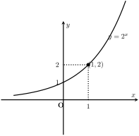
With these points in hand, we draw a smooth curve through the points obtaining the graph appearing above. Observe that the domain of
\(y = 2^{x}\) is
\(\text{IR}\text{,}\) the graph has no
\(x -\)intercepts, as
\(x \rightarrow + \infty\text{,}\) the
\(y\) values are increasing very rapidly, whereas as
\(x \rightarrow - \infty\text{,}\) the
\(y\)values are getting closer and closer to 0. Thus,
\(x - \text{axis}\) is a horizontal asymptote, the
\(y -\)intercept is 1 and the range of
\(y = 2^{x}\) is the set of positive real numbers.
-
It would be instructive to compute a table of values as we did in example 1 above (you are urged to do so). However, we will take a different approach. We note that
\(y = f(x) = \left( \frac{1}{2} \right)^{x} = \frac{1}{2^{x}} = 2^{- x}\text{.}\) If
\(f(x) = 2^{x}\text{,}\) then
\(f( - x) = 2^{- x}\text{.}\) Thus by the graphing principle for
\(f( - x)\text{,}\) we can obtain the graph of
\(y = 2^{- x}\) by reflecting the graph of
\(y = 2^{x}\) about the
\(y - \text{axis}\text{.}\)
Here again the
\(x - \text{axis}\) is a horizontal asymptote, there is no
\(x -\)intercept, 1 is
\(y -\)intercept and the range is the set of positive real numbers. However, the graph is now decreasing rather than increasing.
The following box summarizes the important facts about exponential functions and their graphs.
-
The domain of the exponential function is the set of real numbers
-
The range of the exponential function is the set of positive real numbers
-
The graph of \(y = b^{x}\) exhibits exponential growth if \(b > 1\) or exponential decay if \(0 < b < 1\text{.}\)
-
The \(y -\)intercept is 1.
-
The \(x -\)intercept is a horizontal asymptote
-
The exponential function is 1 – 1. Algebraically if \(b^{x} = b^{y}\text{,}\) then \(x = y\)
|
Example 3.5.10.
Sketch the graph of each of the following. Find the domain, range, intercepts, and asymptotes.
a)
\(y = 3^{x} + 1\) \(\qquad \qquad \text{b)}\,y = 3^{x + 1}\) \(\qquad \qquad \text{c)}\,y = - 9^{- x} + 3\)
Solution.
-
To get the graph of
\(y = 3^{x} + 1\text{.}\) We start with the graph of
\(y = 3^{x}\text{,}\) which is the basic exponential growth graph, and shift it up 1 unit.
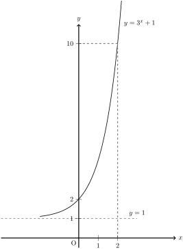
|
From the graph we see that
|
-
To get the graph of
\(y = 3^{x + 1}\text{,}\) we start with the graph of
\(y = 3^{x}\text{,}\) and shift 1 unit to the left.
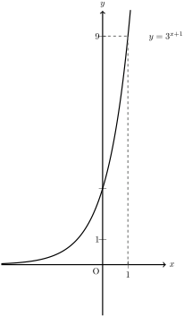
|
From the graph we see that
|
-
To get the graph of
\(y = - 9^{- x} + 3\text{,}\) we start with the basic exponential decay
\(y = 9^{- x}\text{.}\) We then reflect it with respect to the
\(x - \text{axis}\text{,}\) which gives the graph of
\(y = - 9^{- x}\text{.}\) Finally, we shift this graph up 3 units to get the required graph of
\(y = - 9^{- x} + 3\text{.}\)
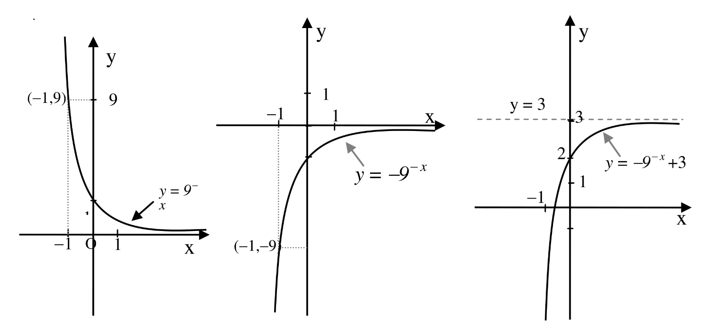
From the graph of
\(y = - 9^{- x} + 3\text{,}\) we can see that
\(\text{Dom}(h) = \Re\text{,}\) \(\text{Range}(h) = ( - \infty,3)\text{,}\) the line
\(y = 3\) is a horizontal asymptote, 2 is the
\(y -\)intercept and
\(x = - \frac{1}{2}\) is the
\(x -\)intercept.
\(\textbf{Remark}\text{:}\) When the base
\(b\) of the exponential function
\(f(x) = b^{x}\) equals to the number
\(e\text{,}\) where
\(e = 2\text{.}\text{7182}\cdots\text{,}\) we call the exponential function the natural exponential function.
-
\(\displaystyle \textbf{Logarithmic Functions}\)
In the previous subsection we noted that the exponential function
\(f(x) = b^{x}\) (where
\(b > 0\) and
\(b \neq 1\)) is one to one. Thus, the exponential function has an inverse function. What is the inverse of
\(f(x) = b^{x}\text{?}\)
To find the inverse of
\(f(x) = b^{x}\text{,}\) let’s review the process for finding an inverse function by comparing the process for the polynomial function
\(y = x^{3}\) and the exponential function
\(y = 3^{x}\text{.}\) Keep in mind that
\(x\) is our independent variable and
\(y\) is the dependent variable and so whenever possible we want a function solved explicitly for
\(y\text{.}\)
\(y = x^{3} \qquad \text{Interchange}\) \(x\) and \(y\)
\(x = y^{3} \qquad \text{solve for}\) \(y\)
|
\(y = 3^{x}\qquad \text{Interchange}\) \(x\) and \(y\)
\(x = 3^{y} \qquad \text{solve for}\) \(y\)
|
|
|
There is no algebraic procedure we can use to solve
\(x = 3^{y}\) for
\(y\text{.}\) By introducing radical notations we could express the inverse of
\(y = x^{3}\) explicitly in the form
\(y = \sqrt[3]{x}\text{.}\) In words,
\(y^{3} = x\) and
\(y = \sqrt[3]{x}\) both mean exactly the same thing:
\(y\) is the number whose cube is
\(x\text{.}\) Similarly, if we want to express
\(x = 3^{y}\) explicitly as a function of
\(x\text{,}\) we need to invent a special notation for this. The key idea is to take the equation
\(x = 3^{y}\) and express it verbally.
\begin{equation*}
x = 3^{y}\, \text{ means}\, y \, \text{ is the exponent to which}\, 3\, \text{ must be raised to yield}\, x
\end{equation*}
We introduce the following notation, which expresses this idea in a much more compact form.
Definition 3.5.11.
For \(b>0\) and \(b \neq 1\text{,}\) we write \(y = \log_{b} x\) to mean \(y\) is the exponent to which \(b\) must be raised to yield \(x\text{.}\) In other words,
\begin{equation*}
x = b^{y} \Leftrightarrow y = \log_{b} x\text{.}
\end{equation*}
We read
\(y = \log_{b} x\) as “
\(y\) equals the logarithm of
\(x\) to the base
\(b\)”.
\(\textbf{REMEMBER:}\) \(y = \log_{b} x\) is an alternative way of writing
\(x = b^{y}\)
When an expression is written in the form
\(x=b^{y}\text{,}\) it is said to be in exponential form. When an expression is written in the form
\(y=\log_{b} x\text{,}\) it is said to be in logarithmic form. The table below illustrates the equivalence of the exponential and logarithmic forms.
\(6^{\frac{1}{2}}= \sqrt{6}\)
|
\(\log_{5} \frac{1}{125} = -3\)
\(\log_{6} \sqrt{6} = \frac{1}{2}\)
|
Example 3.5.12.
-
Write each of the following in exponential form.
-
\(\displaystyle \log_{3}^ {\frac{1}{9}}=-2\)
-
\(\displaystyle \log_{16} 2=\frac{1}{4}\)
-
Write each of the following in logarithmic form.
-
\(\displaystyle 10^{-3}=0.001\)
-
\(\displaystyle 27^{\frac{2}{3}}=9\)
-
Evaluate each of the following.
-
\(\displaystyle \log_{3} 81\)
-
\(\displaystyle \log_{8} \frac{1}{64}\)
Solution.
-
-
\(\log_{3}^{\frac{1}{9}}=-2\) means
\(3^{-2}=\frac{1}{9}\)
-
\(\log_{16} 2=\frac{1}{4}\) means
\(16^{\frac{1}{4}}=2\)
-
-
\(10^{-3}=0.001\) means
\(\log_{10} 0.001=-3\)
-
\(27^{\frac{2}{3}}=9\) means
\(\log_{27} 9=\frac{2}{3}\)
-
-
To evaluate
\(\log_{3} 81\text{,}\) we let
\(t = \log_{3} 81\text{,}\) and then rewrite the equation in exponential form,
\(3^{t} = 81\text{.}\) Now, if we can express both sides in terms of the same base, we can solve the resulting exponential equation, as follows:
\(\begin{align}
t &= \log_{3} 81 \quad \text{ Rewrite in exponential form:} \\
3^{t} &= 81 \qquad \text{Express both sides in terms of the same base:} \\
3^{t} &= 3^{4} \qquad \text{Since the exponential function is }1 – 1 \\
t &= 4
\end{align}\)
Therefore,
\(\log_{3} 81 = 4\text{.}\)
-
We apply the same procedure as in part (a).
\(\begin{align}
t &= \log_{8} \frac{1}{64} \quad \text{ Rewrite in exponential form:} \\
8^{t} &= \frac{1}{64} \qquad \text{Express both sides in terms of the same base:} \\
8^{t} &= 8^{-2} \qquad \text{Since the exponential function is }1 – 1 \\
t &= -2
\end{align}\)
Therefore,
\(\log_{8} \frac{1}{64} = -2\text{.}\)
As was pointed out at the beginning of this subsection, logarithm notation was invented to express the inverse of the exponential function. Thus,
\(\log_{b} x\) is a function of
\(x\text{.}\) We usually write
\(f ( x ) = \log_{b} x\) rather than writing
\(f ( x ) = \log_{b} ( x )\) and use parenthesis only when needed to clarify the input to the log function. For example,
If
\(f ( x ) = \log_{5} ( 4 - x )\text{,}\) then
\(f ( -1) = \log_{5} (4 - ( -1)) = \log_{5} 5 = 1\text{,}\) whereas if
\(f ( x ) = 4 - \log_{5} x\text{,}\) then
\(f ( -1) = 4 - \log_{5} ( -1)\text{,}\) which is undefined.
Example 3.5.13.
Given f
\(( x ) = \log_{5} x\text{,}\) find
-
\(\displaystyle f(25) \qquad \qquad \text{b)}\, f(\frac{1}{25}) \qquad \qquad \text{c)}\, f(0) \qquad \qquad \text{d)}\, f(-125)\)
Solution.
-
\(f(25)=log_{5} 25=2\) (since
\(5^{2}=25\))
-
\(f(\frac{1}{25})=\log_{5} \frac{1}{25}=-2\) (since
\(5^{-2}=\frac{1}{25}\))
-
\(f(0)=\log_{5} 0\) is not defined (what power of
\(5\) will yield 0?). We say that
\(0\) is not in the domain of
\(f\text{.}\)
-
\(f(-125)=\log_{5} -125\) is not defined (what power of
\(5\) will yield a negative number?). We say that
\(-125\) is not in the domain of
\(f\text{.}\)
Acknowledging that the logarithmic and exponential functions are inverses, we can derive a great deal of information about the logarithmic function and its graph from the exponential function and its graph.
Example 3.5.14.
Sketch the graph of the following functions. Find the domain and range of each.
-
\(\displaystyle y=\log_{3} x \qquad \qquad \text{b)}\, y=\log_{\frac{1}{2}} x\)
Solution.
-
Since
\(y = \log_{3} x\) is the inverse of
\(y = 3^{x}\text{,}\) we can obtain the graph of
\(y = \log_{3} x\) by reflecting the graph of
\(y = 3^{x}\) about the line
\(y = x\text{,}\) as shown below.
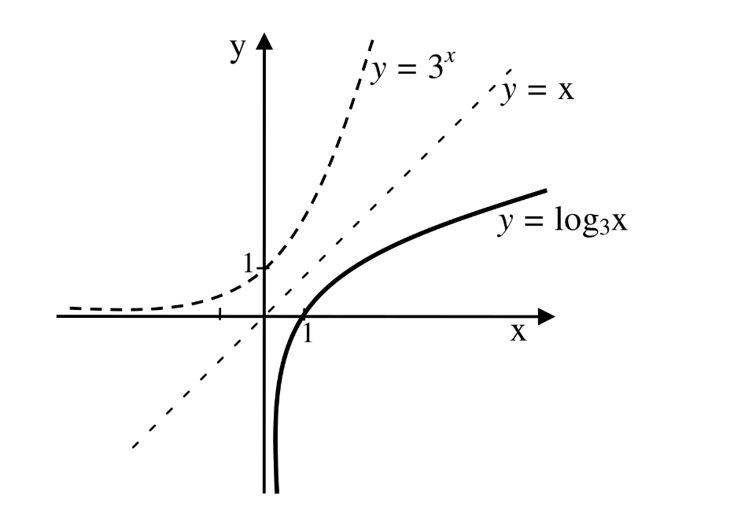
-
To get the graph of
\(y = \log_{1/2} x\text{,}\) we reflect the graph of
\(y = (1/2)^{x}\) about the line
\(y = x\) as shown below.
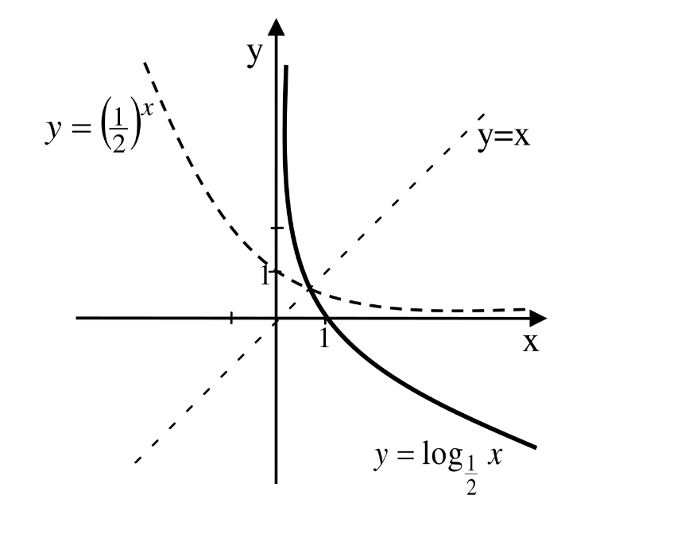
Taking note of the features of the two graphs we have the following important informations about the graph of the log function:
-
Its domain is the set of positive real numbers
-
Its range is the set of real numbers.
-
Its graph exhibits logarithmic growth if \(b>1\) and logarithmic decay if \(<b<1\text{.}\)
-
The \(x-\) intercept is \(1\text{.}\) There is no \(y-intercept\text{.}\)
-
The \(y-\) axisis a vertical asymptote.
|
Example 3.5.15.
-
Sketch the graph of
\(f(x)=1+\log_{3}(x-2)\text{.}\) Find the domain, range, asymptote and intercepts.
-
Find the inverse function for
-
\(\displaystyle y=f(x=3^{x})+4 \qquad \qquad \text{b)}\, y=g(x)=\log_{3}(x-2)\)
Solution.
-
We can obtain the graph of
\(y=1+\log_{3}(x-2)\) by applying the graphing principle to shift the basic logarithmic growth graph
\(2\) units to the right and 1 unit up.
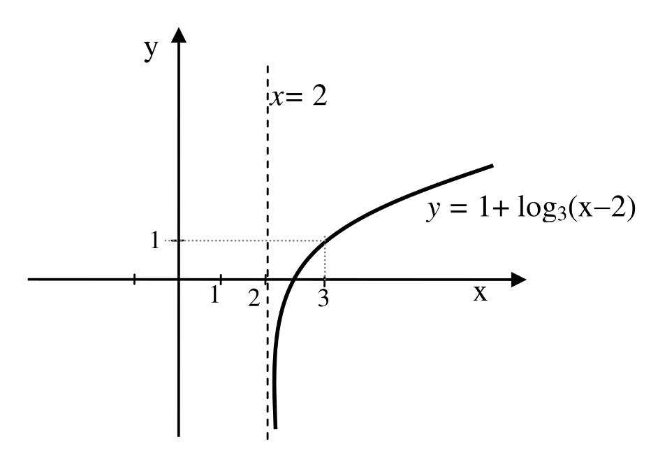
We have
Dom \((f)={x:x>2}\text{,}\) Range\((f)={y:y>1}\) and the graph has the line
\(x=2\) as a vertical asymptote. To find the intercept, we set
\(y=0\) and solve for
\(x\text{.}\) Setting
\(y=0\) and solving for
\(x\text{,}\) we will obtain
\(x=\frac{7}{3}\text{.}\) Thus, the
\(x-\) intercept is
\(\frac{7}{3}\text{.}\)
-
Following the procedure for finding an inverse function, we have
-
\begin{align*}
y =\amp 3^x+4 \quad \text{Interchange}\, x \, \text{and}\, y \\
x= \amp 3^y+4\quad \text{solve explicitly for } \,y \\
x-4= \amp 3^y \quad \text{Write in logarithmic form} \\
y= \amp \log_{3}(x-4) \\
\text{Thus,}\,f^{-1}= \amp \log_{3}(x-4)
\end{align*}
-
\begin{align*}
y =\amp \log_{3}(x-2) \quad \text{Interchange}\, x \, \text{and}\, y \\
x= \amp \log_{3}(y-2) \quad \text{Write in logarithmic form} \\
y-2= \amp 3^x\quad \text{solve explicitly for } \,y \\
y= \amp 3^x+2 \\
\text{Thus,}\,g^{-1}= \amp 3^x+2
\end{align*}
The following table contains the basic properties of logarithm:
\(\textbf{Properties of logarithm}\)
|
Assume that \(b\text{,}\) \(u\) and \(v\) are positive and \(b \neq 1\text{.}\) Then
|
-
\(\log_{b}(uv) = \log_{b}(u) + \log_{b}(v)\)
In words, logarithm of a product is equal to the sum of the logs of the factors.
-
\(\log_{b}(\frac{u}{v}) = \log_{b}(u) - \log_{b}(v)\)
In words, the log of a quotient is the log of the numerator minus the log of the denominator.
-
\(\log_{b}(u^{r}) = r \log_{b}(u)\)
In words, the log of a power is the exponent times the log.
-
\(\displaystyle \log_{b}(b^{x}) = x \log_{b}(b) = x\)
-
\(\displaystyle b^{\log_{b} x} = x\)
-
\(\log_{b}c=\frac{\log_{a}c}{\log_{a}b}\) if a is positive and \(a \neq 1\) .
|
The following table contains the basic properties of logarithm:
Example 3.5.16.
Express in terms of simpler logarithms.
-
-
\(\displaystyle \log_{b}(x^3y) \qquad \qquad \text{b)}\, \log_{b}(x^3+y) \qquad \qquad \text{c)}\, \log_{b}\left ( \frac{\sqrt{xy}}{z^3} \right )\)
-
Show that
\(\log_{b} 12 = -\log_{b} 2\text{.}\)
Solution.
-
-
\(\displaystyle \log_{b}(x^3y) = \log_{b}x^3+log_{b}y=3\log_{b}(x) + log_{b}(y)\)
-
Examining the properties of logarithms, we can see that they deal with log of a product, quotient and power. Thus,
\(log_{b}(x^3 + y)\) which is the log of a sum cannot be simplified using log properties.
-
\(\log_{b}\left ( \frac{\sqrt{xy}}{z^3} \right )=\log_{b}\sqrt{xy}-\log_{b}(z^3)=\log_{b}(xy)^\frac{1}{2}-3 \log_{b}z=\frac{1}{2}(\log_{b}x+\log_{b}y)-3\log_{b}z\)
-
\(\displaystyle \text{We have}\, \log_{b} 12 = \log_{b} 1 - \log_{b} 2 = 0 - \log_{b} 2 = - \log_{b} 2 .\)
The logarithmic function was introduced without stressing the particular base chosen. However, there are two bases of special importance in science and mathematics, namely,
\(b = 10\) and
\(b = e\text{.}\)
Definition 3.5.17.
\(\textbf{(Common Logarithm)}\)
\(f ( x )=\log_{10} x\) is called the common logarithm function. We write
\(\log_{10} x = \log x\text{.}\)
The inverse of the natural exponential function is called the natural logarithmic function and has its own special notation.
Definition 3.5.18.
\(\textbf{(Natural Logarithm)}\)
\(f ( x )=\log_{e} x\) is called the natural logarithm function. We write
\(\log_{e} x = \ln x\text{.}\)
Example 3.5.19.
-
Evaluate
\(\log 1000\text{.}\)
-
Find the inverse function of
\(f ( x ) = e^{x} + 1\text{.}\)
Solution.
-
Evaluate
\(\log 1000\text{.}\)
Let
\(\log_{a}=\log 1000 \text{.}\) Then ,
\(a=\log_{10} 1000=\log_{10} 10^3=3\text{.}\)
\(\begin{align}
y &=e^x+1 \qquad \text{Interchange x and y} \\
y &=e^y+1 \qquad \text{Solve for }\,y \\
x-1 &=e^y \qquad \qquad \text{Rewrite in logarithmic form}\\
y &=\ln(x-1)\\
\text{Thus,}\,f^{-1} &= \ln(x-1)
\end{align}\)
-
\(\displaystyle \textbf{Trigonometric functions and their graphs}\)
For the functions we have encountered so far, namely polynomial, rational and exponential functions, as the independent variable goes to infinity the graph of each of these three functions either goes to infinity(very quickly) for exponential functions or approaches a finite horizontal asymptote. None of these functions can model the regular periodic patterns that play an important role in the social, biological, and physical sciences: business cycles, agricultural seasons, heart rhythms, and hormone level fluctuations, and tides and planetary motions. The basic functions for studying regular periodic behaviour are the trigonometric functions. The domain of the trigonometric functions is more naturally the set of all geometric angles.
Angle Measurement.
An angle is the figure formed by two half-lines or rays with a common end point. The common end point is called the vertex of the angle.
In forming the angle, one side remains fixed and the other side rotates. The fixed side is called the initial side and the side that rotates is called the terminal side. If the terminal side rotates in a counter clockwise direction, we call the angle positive angle, and if the terminal side rotates in a clockwise direction, we call the angle negative angle.
What attribute of an angle are we trying to measure when we measure the size of an angle? A moment of thought will lead us to the conclusion that when we measure an angle we are trying to answer the question: Through what part of a complete rotation has the terminal side rotated?
We will use degree (°) as the unit of measurement for angles. Recall that the measure of a full round angle (full circle) is 360°, straight angle is 180°, and right angle is 90°.
An alternative unit of measure for angles which will indicate their size is the radian measure. To see the connection between the degree measure and radian measure of an angle, let us consider an angle
\(\theta\) and draw a circle of radius
\(r\) with the vertex of
\(\theta\) at its center
\(O\text{.}\) Let
\(s\) represent the length of the arc of the circle intercepted by
\(\angle \theta\) (as shown below).
Basic geometry tells us that the central angle
\(\theta\) will be the same fractional part of one complete rotation as
\(\textbf{s}\) will be of the circumference of the circle. For example,
\(\theta\) is
\(\frac{1}{10}\) of a complete rotation, then
\(\textbf{s}\) will be
\(\frac{1}{10}\) of the circumference of the circle. In other words, we can set up the following proportion:
\begin{equation*}
\frac{\theta}{1\,\textit{1 complete rotation}}=\frac{\textbf{s}}{\textit{circumference of circle}}=\frac{2}{2 \pi r}
\end{equation*}
Thus, we have the following conversion formula:
\begin{equation*}
\frac{\theta\, \textit{in degrees}}{180^\circ}=\frac{\theta \, \textit{in radians}}{\pi}
\end{equation*}
Example 3.5.20.
-
Convert each of the following radian measures to degrees.
-
\(\displaystyle \frac{\pi}{6} \qquad \qquad \text{b)}\, \frac{3\pi} {5}\)
-
Convert to radian measures
-
\(\displaystyle \frac{\pi}{6} \qquad \qquad \text{b)}\, \frac{3\pi} {5}\)
Solution.
-
-
By the conversion formula, we have
\(\frac{180^\circ}{\pi}=\frac{\frac{\pi}{6}}{\pi}\text{,}\) which implies that
\(\theta=30^\circ\text{.}\)
-
Again using the conversion formula, we get
\(\frac{\theta}{180^\circ}=\frac{\frac{3 \pi}{5}}{\pi} \text{,}\) which implies that
\(\theta=108^\circ\text{.}\)
-
-
Let
\(\theta\) represent the radian measure of
\(90^\circ\text{.}\) Using the conversion formula, we obtain:
\(\frac{\theta}{\pi}=\frac{90^\circ}{180^\circ}\text{,}\) which implies that
\(\theta=\frac{\pi}{2}\text{.}\)
-
Rather than using the conversion formula, we notice that
\(270^\circ=3(90^\circ)\text{.}\) In part (a) we found that
\(90^\circ=\frac{\pi}{2}\text{,}\) and so we have
\(270^\circ=3\left(\frac{\pi}{2}\right)=\frac{3\pi}{2}\text{.}\)
To define the trigonometric functions, we will view all angles in the context of a Cartesian coordinate system: that is, given an angle
\(\theta\text{,}\) we begin by putting
\(\theta\) in standard position, meaning that the vertex of
\(\theta\) is placed at the origin and initial side of
\(\theta\) is placed along the positive
x-axis. Thus the location of the terminal side of
\(\theta\) will, of course, depend on the size of
\(\theta\text{.}\)
We then locate a point (other than the origin) on the terminal side of
\(\theta\) and identify its coordinates
\((x,y)\) and its distance to the origin, denoted by
\(r\text{.}\) Then,
\(r\) is positive.
With
\(\theta\) in standard position, we define the six trigonometric functions of
\(\theta\) as follows:
Definition 3.5.21.
|
|
\(\sin \theta = \frac{y}{r}\)
|
|
|
\(\cos \theta = \frac{x}{r}\)
|
|
|
\(\tan \theta = \frac{y}{x}\)
|
|
|
\(\csc \theta = \frac{r}{y}\)
|
|
|
\(\sec \theta = \frac{r}{x}\)
|
|
|
\(\cot \theta = \frac{x}{y}\)
|
Recall that the radian measure of an angle is defined as
\(\theta=\frac{s}{r}\text{,}\) where
\(s\) is the length of the arc intercepted by
\(\theta\) and
\(r\) is the length of the radius Since
\(s\) and
\(r\) are both lengths, the quotient
\(\frac{s}{r}\) is a pure number without any units attached. Thus, any angle can be interpreted as a real number. Conversely, any real number can be interpreted as an angle. Thus, we can describe the domains of the trigonometric functions in the frame work of the real number systems. If we let
\(x=\frac{s}{r}\text{,}\) the domain consists of all real numbers
\(x\) for which
\(\theta\) is defined. Since
\(\cos \theta\) and
\(\sin \theta\) are never equal to zero, the domain for
\(\tan \theta\) is the set of all real numbers. Similarly, the domain of
\(\csc \theta\) is also the set of all real numbers.
-
\(\displaystyle \textbf{The graph of} \,y=\sin \theta\)
To analyze
\(f{\theta}=sin{\theta}\) , we keep in mind that once we choose a real number
\(\theta\text{,}\) we draw the angle, in standard position, that corresponds to
\(\theta\text{.}\) To simplify our analysis, we choose the point
\((x,y)\) on the terminal side so that
\(r=1\text{.}\) That is,
\((x,y)\) is a point on the unit circle
\(x^2+y^2=1\text{.}\)
Note that
\(sin{\theta}=\frac{y}{1}=y\text{.}\)
As the terminal side of
\(\theta\) moves through the first quadrant,
\(y\) increases from
\(0\) (when
\(\theta=0\) ) to
\(1\) (when
\(\theta=\frac{\pi}{2}\) ). Thus, as
\(\theta\) increases from
\(0\) to
\(\frac{\pi}{2}\text{,}\) \(y=\sin{\theta}\) steadily increases from
\(0\) to
\(1\text{.}\) As
\(\theta\) increases from
\(\frac{\pi}{2}\) to
\(\pi\text{,}\) \(y=\sin{\theta}\) decreases from
\(1\) to
\(0\text{.}\) A similar analysis reveals that as
\(\theta\) increases from
\(\pi\) to
\(\frac{3\pi}{2}\text{,}\) \(\sin{\theta}\) decreases from
\(0\) to
\(-1\text{;}\) and as
\(\theta\) increases from
\(\frac{3\pi}{2}\) to
\(2\pi\text{,}\) \(\sin{\theta}\) increases from
\(-1\) to
\(0\text{.}\)
Based on this analysis, we have the graph of
\(f (\theta ) = \sin{\theta}\) in the interval
\([0,2\pi ]\) as show below.
Since the values of
\(f(\theta)=\sin \theta \) depend only on the position of the terminal side, adding or subtracting multiples of
\(2\pi\) to
\(\theta\) will leave the unchanged. Thus, the value of
\(f(\theta)\) will repeat every
\(2\pi\) units. The complete graph of
\(f(\theta)\) appears below.
The graph of
\(y=\sin x\text{,}\) which is called the basic sine curve.
-
\(\displaystyle \textbf{The graph of} \, y=\cos \theta\)
Applying the same type of analysis to
\(f(\theta) = \cos \theta\text{,}\) we will able to get a good idea of what its graph looks like. The figure below shows the angle corresponding to
\(\theta\) as it increases through quadrant I, II, III and IV.
Keeping in mind that
\(\cos \theta = \frac{x}{1} = x\text{,}\) we have the following:
-
As
\(\theta\) increases from 0 to
\(\frac{\pi}{2}\text{,}\) \(x = \cos \theta\) decreases from 1 to 0.
-
As
\(\theta\) increases from
\(\frac{\pi}{2}\) to
\(\pi\text{,}\) \(x = \cos \theta\) decreases from 0 to -1.
-
As
\(\theta\) increases from
\(\pi\) to
\(\frac{3\pi}{2}\text{,}\) \(x = \cos \theta\) increases from -1 to 0.
-
As
\(\theta\) increases from
\(\frac{3\pi}{2}\) to
\(2\pi\text{,}\) \(x = \cos \theta\) increases from 0 to 1.
Based on this analysis, we have the graph of f (\theta ) = cos\theta as shown below:
\(\textbf{The graph of} \, y=\tan \theta\)
since
\(\tan \theta=\frac{y}{x}\) is undefined whenever
\(x=0\) ,
\(\tan \theta\) is undefined whenever the terminal side of the angle corresponding to
\(\theta\) falls on the
\(y\) - axis . This happens for
\(\theta=\frac{\pi}{2}\) , to which we can add or subtract any multiple of
\(\pi\) that will again bring the terminal side back to the
\(y\) - axis . Thus, domain of
\(\tan \theta\) is {
\(\theta\) :
\(\theta \neq \frac{\pi}{2} + n\pi\)} , where
\(n\) is an integer.
-
As
\(\theta\) increases from 0 to
\(\frac{\pi}{2}\text{,}\) \(x\) decreases from 1 to 0 and
\(y\) increases from 0 to 1; therefore,
\(\tan \theta = \frac{y}{x}\) increases from 0 to
\(\infty\text{.}\)
-
As
\(\theta\) increases from
\(\frac{\pi}{2}\) to
\(\pi\text{,}\) \(x\) decreases from 0 to -1 and
\(y\) decreases from 1 to 0; therefore,
\(\tan \theta = \frac{y}{x}\) increases from
\(- \infty\) to 0.
-
As
\(\theta\) increases from
\(\pi\) to
\(\frac{3\pi}{2}\text{,}\) \(x\) increases from -1 to 0 and
\(y\) decreases from 0 to -1; therefore,
\(\tan \theta = \frac{y}{x}\) increases from 0 to
\(\infty\text{.}\)
-
As
\(\theta\) increases from
\(\frac{3\pi}{2}\) to
\(2\pi\text{,}\) \(x\) increases from 0 to 1 and
\(y\) increases from -1 to 0; therefore,
\(\tan \theta = \frac{y}{x}\) increases from
\(- \infty\) to
\(0\text{.}\)
You may want to add some more specific values to this analysis. In any case, we get the following as the graph of the tangent function.
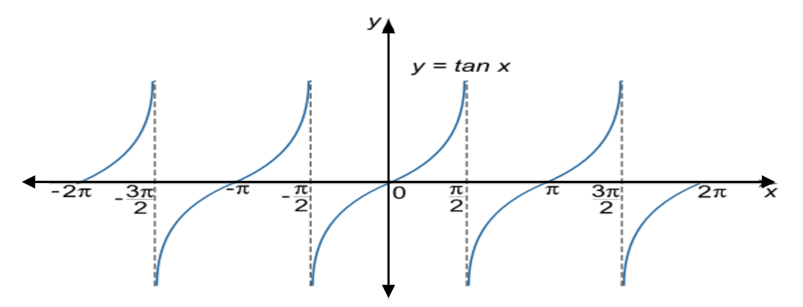
Definition 3.5.22.
\(\textbf{(Periodic Function)}\)
A function
\(y=f(x)\) is called periodic if there exists a number
\(p\) such that
\(f(x+p)=f(x)\) for all
\(x\) in the domain of
\(f\text{.}\) The smallest such number
\(p\) is called the period of the function.
A periodic function keeps repeating the same set of
\(y\) - values over and over again. The graph of a periodic function shows the same basic segment of its graph being repeated. In the case of sine and cosine functions, the period is
\(2\pi\text{.}\) The period of the tangent function is
\(\pi\text{.}\)
Definition 3.5.23.
\(\textbf{(Amplitude of a periodic function)}\)
The amplitude of a periodic function f ( x ) is
\begin{equation*}
A=\frac{1}{2} [\text{maximum value of }\,f (x )- \text{minimum value of} f (x )]
\end{equation*}
Thus, the amplitude of the basic sine and cosine function is
\(1\text{.}\) The portion of the graph of a sine or cosine function over one period is called a complete cycle of the graph. In other words, the minimal portion of a sine or cosine graph that keeps repeating itself is called a complete cycle of the graph.
Definition 3.5.24.
\(\textbf{(Frequency of a periodic function)}\)
The number of complete cycles a sine or cosine graph makes on an interval of length equal to
\(2\pi\) is called its frequency.
The frequency of the basic sine curve
\(y = \sin x\) and the basic cosine curve
\(y = \cos x\) is
\(1\text{,}\) because each graph makes
\(1\) complete cycle in the interval
\([0, 2\pi]\text{.}\)
If a sine function has period of
\(\frac{\pi}{2}\) (see the figure below), then the number of complete cycles its graph will make in an interval of length
\(2\pi\) is
\(\frac{2 \pi}{\frac{\pi}{2}}=4\text{.}\)
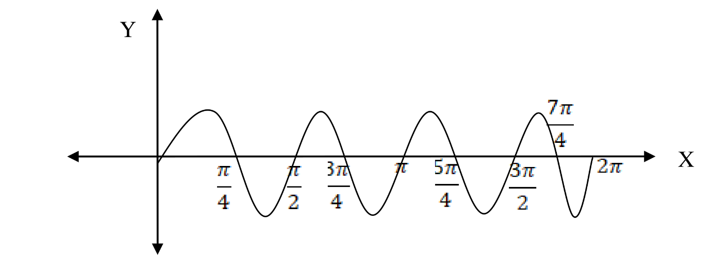
A sine graph of period
\(\frac{\pi}{2}\) and frequency
\(4\)
Thus if a sine function has a period of
\(\frac{\pi}{2}\text{,}\) its frequency is
\(4\) and its graph will make
\(4\) complete cycles in an interval of length
\(2\pi\text{.}\)
Example 3.5.25.
Sketch the graph of
\(y = \sin 2x\) and find its amplitude, period and frequency.
Solution.
We can obtain this graph by applying our knowledge of the basic sine graph. For the basic curve, we have
\(\sin 0 =\qquad \sin \frac{\pi}{2}=1 \qquad \sin \pi = 0 \qquad \sin \frac{3\pi}{2}=-1 \qquad \sin 2\pi = 0\)
These quadrantal values serve as guide points, which help us draw the graph. To obtain similar guide points for
\(y = \sin 2x\text{,}\) we ask for what values of
\(x\) is
\(2x=0 \qquad 2x=\frac{\pi}{2} \qquad 2x=\frac{3 \pi}{2}=-1 \qquad 2x=2 \pi\) and we get
\(x=0 \qquad x=\frac{\pi}{4} \qquad x=\frac{\pi}{2} \qquad x=\frac{3\pi}{4} \qquad x=\pi\)
Thus,
\(y = \sin 2x\) will have the values
\(0, 1, 0, -1, 0\) at
\(x=0\,, \frac{\pi}{4}\,, \frac{\pi}{2}\,, \frac{3\pi}{4}\,, \pi\text{,}\) respectively. The graph of
\(y = \sin 2x\) will thus complete one cycle in the interval
\([0, \pi]\text{,}\) and will repeat the same values in the interval
\([\pi, 2\pi]\text{.}\)
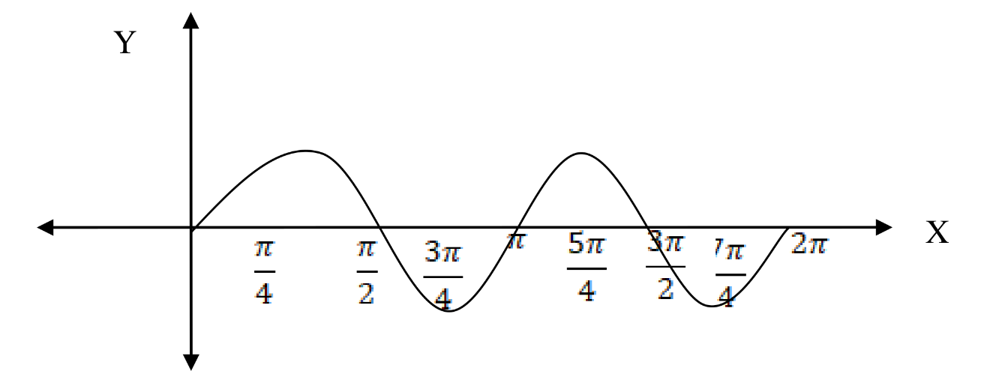
From this graph we see that
\(y = \sin 2x\) has an amplitude of 1, a period
\(\pi\text{,}\) and a frequency of 2.
For convenience we summarize our discussion on the domains of the trigonometric functions in the table.
|
Domain = All real numbers
|
|
Domain = All real numbers
|
|
Domain \(={x:x \neq \frac{\pi}{2}+n \pi}\)
|
|
Domain \(={x:x \neq n \pi}\)
|
|
Domain \(={x:x \neq \frac{\pi}{2}+n \pi}\)
|
|
Domain \(={x:x \neq n \pi}\)
|
|
where \(n\) is an integer
|
In the course of our discussion of the trigonometric functions, we have discussed two types of trigonometric relationships: the reciprocal and quotient relationships. These relationships are examples of trigonometric identities. In the table below we list identities that are satisfied by the trigonometric functions.
The reciprocal Identities.
-
\(\displaystyle \csc \,x=\frac{1}{\sin \, x}\)
-
\(\displaystyle \sec \,x=\frac{1}{\cos \, x}\)
-
\(\displaystyle \cot \,x=\frac{1}{\tan \, x}\)
The quotient Identities.
-
\(\displaystyle \tan \,x=\frac{\sin \, x}{\cos \, x}\)
-
\(\displaystyle \cot \,x=\frac{\cos \, x}{\sin \, x}\)
The Pythagorean Identities.
-
\(\displaystyle \sin^2 \, x + \cos^2 \, x = 1\)
-
\(\displaystyle 1 + \tan^2 \, x = \sec^2 \, x\)
-
\(\displaystyle 1 + \cot^2 \, x = \csc^2 \, x\)
The addition formula.
-
-
\(\displaystyle \sin(x + y) = \sin x \cos y + \cos x \sin y\)
-
\(\displaystyle \sin(x - y) = \sin x \cos y - \cos x \sin y\)
-
-
\(\displaystyle \cos(x + y) = \cos x \cos y - \sin x \sin y\)
-
\(\displaystyle \cos(x - y) = \cos x \cos y + \sin x \sin y\)
-
-
\(\displaystyle \tan(x + y) = \frac{\tan x + \tan y}{1 - \tan x \tan y}\)
-
\(\displaystyle \tan(x - y) = \frac{\tan x - \tan y}{1 + \tan x \tan y}\)
The double angle formula.
-
\(\displaystyle \sin(2x) = 2 \sin x \cos x\)
-
\(\displaystyle \cos(2x) = \cos^2 x - \sin^2 x\)
-
\(\displaystyle \tan(2x) = \frac{2 \tan x}{1 - \tan^2 x}\)
The half-angle formula.
-
\(\displaystyle \sin\left(\frac{x}{2}\right) = \pm \sqrt{\frac{1 - \cos x}{2}}\)
-
\(\displaystyle \cos\left(\frac{x}{2}\right) = \pm \sqrt{\frac{1 + \cos x}{2}}\)
-
\(\displaystyle \tan\left(\frac{x}{2}\right) = \pm \sqrt{\frac{1 - \cos x}{1 + \cos x}} \)
-
\(\displaystyle \textbf{Hyperbolic functions and their graphs}\)
The hyperbolic functions are certain combinations of exponential functions, that occur in various applications, with properties similar to those of the trigonometric functions. Among many other applications they are used to describe the formation of satellite rings around the planets, to describe the shape of a rope hanging from two points, and have application in relativity theory. The two basic hyperbolic functions are the hyperbolic sine and hyperbolic cosine functions. They are defined as follows:
Definition 3.5.26.
-
The
\(\textbf{hyperbolic sine}\) function is defined by:
\(\sinh \,x = \frac{e^x - e^{-x}}{2}\)
The domain of
\(\sinh \,x\) is
\(\mathbb{R}\text{.}\)
-
The
\(\textbf{hyperbolic cosine}\) function is defined by:
\(\cosh \,x = \frac{e^x + e^{-x}}{2}\)
The domain of
\(\cosh \,x\) is
\(\mathbb{R}\text{.}\)
Remark:.
-
\(\cosh \,x\) is pronounced " kosh" x and
\(\sinh \,x\) is pronounced as "
cinch"
\(x\) .
-
Since
\(e^{-x} > 0\) for all
\(x \in \Re\text{,}\) we see that
\(\cosh \,x > \sinh \,x\) for every
\(x \in \Re\text{.}\)
-
If
\(f(x)=\frac{e^x+e^{-x}}{2}\text{,}\) then
\(f(-x)=\frac{e^{-x}+e^{x}}{2}=\frac{e^{x}+e^{-x}}{2}=f(x)\text{.}\) Thus,
\(\cosh \,x\) is an even
-
\(\sinhx\) is an odd function.
-
In contrast to sine and cosine, the hyperbolic functions are not periodic.
Example 3.5.27.
-
\(\displaystyle \cosh^2\,x-\sinh^2\,=1\)
-
\(\displaystyle \sinh(x+y)=\cosh\,x\sinh\,y+ \sinh\,x\sinh \,y\)
-
\(\displaystyle \sinh(x+y)=\sinh\,x\cosh\,y+ \cosh\,x\sinh \,y\)
Solution.
-
\(\left ( \frac{e^x+e^x}{2} \right )-\left ( \frac{e^x-e^x}{2} \right )=\left ( \frac{e^{2x}+2+e^{-2x}}{2} \right )-\left ( \frac{e^{2x}-2+e^{-2x}}{2} \right )=1\)
-
\begin{align*}
\sinh(x+y)=\amp \frac{e^{x+}-e^{-x-y}}{2} \\
=\amp \frac{e^xe^y-e^{-x}e^{-y}}{2} \\
=\amp \frac{2e^xe^y-2e^{-x}e^{-y}}{2}\\
=\amp \frac{2e^xe^y-2e^{-x}e^{-y}}{4}\\
=\amp \frac{e^xe^y-e^{-x}e^{-y}+e^{-x}e^{y}-e^{-x}e^{-y}}{4}+\frac{e^xe^y+e^{x}e^{-y}-e^{-x}e^{y}-e^{-x}e^{-y}}{4} \\
= \amp \left ( \frac{e^x+e^{-x}}{2} \right )\left ( \frac{e^y+e^{-y}}{2} \right )+\left ( \frac{e^x-e^{-x}}{2} \right )\left ( \frac{e^y+e^{-y}}{2} \right )\\
= \amp \cosh \,x\sinh\,y+\sinh\,x\cosh\,y
\end{align*}
-
-
\(\displaystyle \textbf{The graph of} \, y=\sinh x\)
Since
\(\cosh x\) is an even function, its graph is symmetric about the
y-axis. Its
\(y-\) intercept is
\((0,1)\text{,}\) because
\(\cosh(0)=1\) . As
\(x\) tends to infinity,
\(\cosh x
=\frac{e^x}{2}+\frac{e^{-x}}{2}\) tends to infinity because
\(\frac{e^x}{2}\) goes to infinity and
\(\frac{e^{-x}}{2}\) approaches to 0. When
\(x\) is a large negative number
\(\cosh x\) acts like
\(\frac{e^{-x}}{2}\text{,}\) because
\(\frac{e^x}{2}\) gets close to
\(0\text{.}\) Thus the graph of
\(y = \cosh x\) looks like:
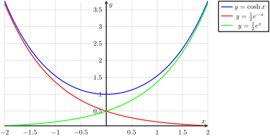
This graph can also be obtained by geometrically adding the two curves
\(y = e^x\) and
\(y =e^{-x}\text{,}\) and taking half of each resulting
\(y\)-value. Observe that range of
\(\cosh x\) is
\([1, \infty)\text{.}\)
-
\(\displaystyle \textbf{The graph of} \, y=\sinh x\)
Since
\(\sinh\,x\) is an odd function, its graph is symmetric about the origin. The graph passes through the origin because
\(\sinh(0) = 0\text{.}\) As
\(x\) gets large,
\(\sinh \,x\) acts like
\(\frac{e^x}{2}\) and when
\(x\) is a large negative number,
\(\sinh \,x\) acts like
\(-\frac{e^{-x}}{2}\text{.}\) Thus, the graph of
\(y = \sinh \,x\) looks like:
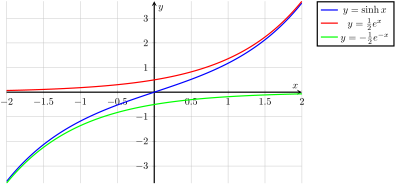
The remaining four hyperbolic functions are defined in terms of cosh x and sinh x by analogy with trigonometry.
\(\tanh\,x=\frac{\sinh\,x}{\cosh\,x}=\frac{e^x-e^{-x}}{e^x+e^{-x}}\) (The domain of
\(\tanh x\) is
\(\Re\)).
\(\coth\,x=\frac{\cosh\,x}{\sinh\,x}=\frac{e^x+e^{-x}}{e^x-e^{-x}}\) (The domain of
\(\coth x\) is
\(\Re\setminus\{0\}\)).
\(\text{sech}\,x=\frac{1}{\cosh\,x}=\frac{2}{e^x+e^{-x}}\) (The domain of
\(\text{sech}\,x\) is
\(\Re\)).
\(\text{csch}\,x=\frac{\sinh\,x}{\cosh\,x}=\frac{e^x-e^{-x}}{e^x+e^{-x}}\) (The domain of
\(\text{csch}\,x\) is
\(\Re\setminus\{0\}\)).
You may sketch the graphs of these four hyperbolic functions (see exercise
\(19\)).
The trigonometric terminology and notation for the hyperbolic functions stem from the fact that they satisfy a list of identities that much resemble the familiar trigonometric identities, apart from an occasional difference of sign.
\(\cosh^2\,x-\sinh^2\,x=1\)
|
\((1)\) |
\(1-\tanh^2 \,x= \text{sech}^2\,x\)
|
\((2)\) |
\(\coth^2\,x-1=\text{csch}^2\,x\)
|
\((3)\) |
\(\sinh(x+y)=\sinh x\,\cosh y+\cosh x\,\sinh \,y\)
|
\((4)\) |
\(\cosh(x+y)=\cosh x\,\cosh y+\sinh x\,\sinh\, y\)
|
\((5)\) |
The trigonometric functions are sometimes called circular functions because the point (
\(\cos \theta\,,\sin\,\theta\)) lies on the circle
\(x^2+y^2=1\) for all
\(\theta\) . Similarly, identity (1) tells us that the point (
\(\cosh \theta\,,\sinh\,\theta\)) lies on the hyperbola
\(x^2-y^2=1\text{,}\) and this is the reason for the name hyperbolic functions.
Exercises Exercises
1.
Find the domain of the given function.
-
\(\displaystyle f(x)=\frac{1}{6^x} \qquad \text{b)}\,g(x)=\sqrt{3^x+1}\qquad \text{c)}\, h(x)=\sqrt{2^x-8} \qquad \text{d)}\, f(x)=\frac{1}{2^{3x}-2}\)
2.
Sketch the graph of the given function. Identify the domain, range, intercepts, and asymptotes
-
\(\displaystyle y=5^{-x} \qquad \text{b)}\,y=9-3^x \qquad \text{c)}\,y=1-e^{-x} \qquad \text{d)}\,y=e^{x-2}\)
3.
Solve the given exponential equation.
-
\(\displaystyle 2^{x-1}=8 \qquad \text{b)}\,3^{2x}=273 \qquad \text{c)}\,8^{x}=\sqrt{2} \qquad \text{d)}\,16^{3a-2}=\frac{1}{4}\)
4.
Let
\(f(x) = 2^x\) . Show that
\(f(x+3)=8f(x)\text{.}\)
5.
Let
\(g(x)=5^x\text{.}\) Show that
\(g(x-2)=\frac{1}{25}g(x)\text{.}\)
6.
Let
\(f(x)=3^x\text{.}\)Show that
\(\frac{f(x+2)-f(2)}{2}=4(3^x)\)
7.
Evaluate the given logarithmic expression (where it is defined).
-
\(\displaystyle \log_{2} 32 \qquad \text{c)}\,\log_{3}(-9) \qquad \text{e)}\,\log_{5}(\log_{3}243)\)
-
\(\displaystyle \log_{\frac{1}{3}} 9 \qquad \text{d)}\,\log_{6}\frac{1}{\sqrt{6}} \qquad \text{f)} \,2^{\log_{2}\sqrt{5}}\)
8.
If
\(f(x)=\log_{2}(x^2-4)\text{,}\) find
\(f(6)\) and the domain of
\(f\) .
9.
If
\(g(x)=\log_{3}(x^2-4x+3)\text{,}\) find
\(g(4)\) and the domain of
\(g\text{.}\)
10.
Show that
\(\log_{\frac{1}{6}}(x)=-\log_{6}(x)\)
11.
Sketch the graph of the given function and identify the domain, range, intercepts and asymptotes.
-
\(\displaystyle f(x)=log_{2}((x-3) \qquad \text{b)} f(x)=-3+\log_{2}x\qquad \text{c)} f(x)=-log_{3}(-x) \qquad \text{d)} f(x)=3\log_{5}x\)
12.
Find the inverse of
\(f(x)=e^{(3x-1)}\)
13.
Let
\(f(x)=e^{\sqrt{x}}\text{.}\) Find a function so that
\((f \circ g)(x)=(g \circ f)(x)=x\text{.}\)
14.
Convert the given angle from radians to degrees
-
\(\displaystyle \frac{\pi}{3} \qquad \text{b)}\,-\frac{5 \pi}{2} \qquad \text{d)}\, - \frac{4 \pi}{3}\)
15.
Convert the given angle from degrees to radians
-
\(\displaystyle 315^{\circ} \qquad \text{b)}\, -40^{\circ} \qquad \text{c)}\, 330^{\circ} \qquad \)
16.
-
\(\displaystyle f(\theta)=\sec \,\theta \qquad \text{c)} \, f(\theta)=\csc \, \theta \qquad \text{e)} \, f(\theta)=\cot \,\theta \)
-
\(\displaystyle f(x)=1+\cos \,x \qquad \text{d)}=\sin(x+\frac{\pi}{2}) \qquad \text{f)} \tan\,2x\)
17.
Verify the following identities:
-
\(\displaystyle (\sin\,x-\cos\,x)(\csc\,x+\sec\,x)=\tan\,x-\cot\,x\)
-
\(\displaystyle \sec^2\,x-\csc^2\,x=\tan^2\,x-\cot^2\,x\)
18.
Given
\(\tan \,\theta=\frac{1}{2}\) and
\(\sin\,\theta < 0\text{,}\) find
\(\cos\,\theta\text{.}\)
19.
-
\(\displaystyle f(x)=\tanh\,x \qquad \text{c)}=\text{csch}\,x\)
-
\(\displaystyle f(x)=\text{sech}\,x \qquad \text{d)}\,f(x)=\coth\,x\)
20.
Prove the identities (2) and (3).
21.
Find the exact numerical value of
-
\(\displaystyle \sinh(\ln\,2) \qquad \text{b}\, \cosh(-\ln3) \qquad \text{c)}\,\tanh(2 \ln3)\)
22.
Prove the following identities:
-
\(\displaystyle \sinh(x-y)=\sinh \,x \cosh\,y-\cosh\,x\sinh\,y\)
-
\(\displaystyle \cosh(x-y)=\cosh \,x \cosh\,y-\sinh\,x\sinh\,y\)
Checkpoint 3.5.28.
Add reviewdocs.google.com/forms/d/e/1FAIpQLSfSNI6CXkmgeSZJh6v0WKkeD9MJ9g4pEQ9r0JaowD4ovNxj5w/viewform?usp=pp_url&entry.699375810=questions%2Ftop%2FMathematics-for-NS-%26-SS-23-24-Question-Bank%2FFunctions-%28NS-and-SS%29%2FDefinition-and-basic-properties-of-logarithmic%2C-exponential%2C-trigonometric-functions-and-their-graphs%2FSolve-the-exponential-equation.xml&entry.2077830997=source%2Ffunctions%2Fsections%2Fsec-definition-and-basic-properties-of.ptx
Checkpoint 3.5.29.
Add reviewdocs.google.com/forms/d/e/1FAIpQLSfSNI6CXkmgeSZJh6v0WKkeD9MJ9g4pEQ9r0JaowD4ovNxj5w/viewform?usp=pp_url&entry.699375810=questions%2Ftop%2FMathematics-for-NS-%26-SS-23-24-Question-Bank%2FFunctions-%28NS-and-SS%29%2FDefinition-and-basic-properties-of-logarithmic%2C-exponential%2C-trigonometric-functions-and-their-graphs%2FIdentify-the-graph-of-the-trigonometric-function-of-y%3Df%28x%29.xml&entry.2077830997=source%2Ffunctions%2Fsections%2Fsec-definition-and-basic-properties-of.ptx
Checkpoint 3.5.30.
Add reviewdocs.google.com/forms/d/e/1FAIpQLSfSNI6CXkmgeSZJh6v0WKkeD9MJ9g4pEQ9r0JaowD4ovNxj5w/viewform?usp=pp_url&entry.699375810=questions%2Ftop%2FMathematics-for-NS-%26-SS-23-24-Question-Bank%2FFunctions-%28NS-and-SS%29%2FDefinition-and-basic-properties-of-logarithmic%2C-exponential%2C-trigonometric-functions-and-their-graphs%2FSolve-the-logarithmic-equation%2C-giving-your-answer-in-exact-form.xml&entry.2077830997=source%2Ffunctions%2Fsections%2Fsec-definition-and-basic-properties-of.ptx
Checkpoint 3.5.31.
Add reviewdocs.google.com/forms/d/e/1FAIpQLSfSNI6CXkmgeSZJh6v0WKkeD9MJ9g4pEQ9r0JaowD4ovNxj5w/viewform?usp=pp_url&entry.699375810=questions%2Ftop%2FMathematics-for-NS-%26-SS-23-24-Question-Bank%2FFunctions-%28NS-and-SS%29%2FDefinition-and-basic-properties-of-logarithmic%2C-exponential%2C-trigonometric-functions-and-their-graphs%2FFind-several-x-values-on-the-graph-of-the-trigonometric-function-y%3Df%28x%29%3Dtan%28x%29-or-y%3Dcos%28x%29-or-y%3Dsin%28x%29.xml&entry.2077830997=source%2Ffunctions%2Fsections%2Fsec-definition-and-basic-properties-of.ptx